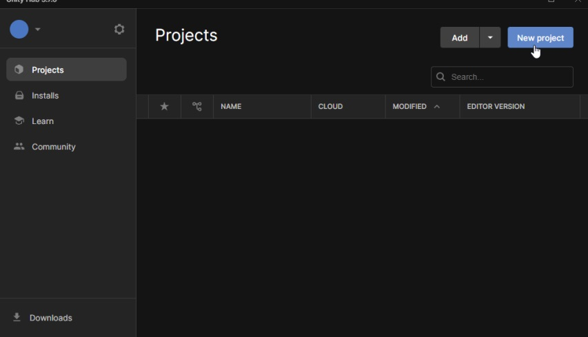

Antes de Tudo
Antes de tudo, gostaria de indicar que é altamente indicado o app ser testado suas funcionalidades dentro do celular primeiro, para isso irei auxiliar você! Primeiro vou lhe ajudar um passo a passo de como baixar a Unity e pegar o projeto exportado e passar para o celular! Primeiro você precisa baixar o Unity no site deles e clicar onde está na imagem. Clique aqui! NOTA:É um projeto feito em Windows, ele só funcionará no momento em Android! Ao Terminaro Download, caso você ja tenha um visual studio ou o visual studio code, não será necessário instalar, faça a ativação das chaves e abra o Unity Hub  Ao abrir o Unity Hub clique em New Project certifique-se de que irá usar a versão 2022.3.7f1, e baixar os seguintes requisitos para funcionar no android. Após selecionar todos os requisitos, clique em continue e aguarde a instalação. Clique em criar um New Project novamente, selecione o template AR, e clique em Create Project Quando abrir, clique no espaço vazio debaixo com o botão direito do mouse e clique em Import Package e Custom Package Selecione o projeto exportado e clique nele, após alguns segundos ele irá pedir o que deve ser exportado, se tudo estiver selecionado, clique em Import Na cena "Principal", se você reparar o caminhão estará rosa, pois está faltando um plugin a ser adicionado para ativar algumas texturas específicas Para adicionar este plugin, você precisa clicar em Window e Package Manager Quando o Package Manager abrir, certifique-se do Packages estar selecionado o Unity Registry, e na lupa procure por Shader Graph, e instale-a Agora você precisa trocar a forma de passar o build para celular, aperte "CTRL + SHIFT + B", e ele irá abrir a tela abaixo, você precisa clicar no símbolo do Android selecionar o Development Build e depois em "Switch Plataform" Após isso, olhe para o lado direito da tela e clique no Project Settings, Player e desmarque as opções "Portrait" e "Portrait Upside Down" As cenas principais que são usadas se chamam, "Vídeo", "Login", "MenuTruck", "Loading", "Principal" e "Dentrocarro" você pode encontra-las na pasta Scenes, para coloca-las no celular é só clicar nelas e arrastar para dentro o Build Settings, na ordem, pois esta é a ordem do projeto
ATENÇÃO, não esqueça de ativar o modo desenvolvedor do seu celular!
Você precisa ativar o modo desenvolvedor Veja mais aqui e também a depuração via USB Veja mais aqui!.
Após isso, continue normalmente
Conecte o celular via cabo USB no computador, em "Run Device" ele deve aparecer o modelho do seu aparelho, caso não apareça você precisa clicar em "Refresh" Ao aparecer selecione o modelo e cliquei embaixo em "Build and Run" e só aguardar a instalação, ao terminar ele vai abrir automaticamente no celular.

Caso queira acessar os Scripts, estão todos comentados de forma para fácil entendimento, para encontra-los é só procurar por Scripts como mostra na imagem, clicando duas vezes ele irá abrir por padrão no visual studio, os fora das pastas são os principais e os que mais estão em uso, sinta-se livre para explorar o projeto Qualquer duvida não hesite entrar em contato pelo meu e-mail: jpcavalcavalchikar@hotmail.com
Bibliotecas usadas